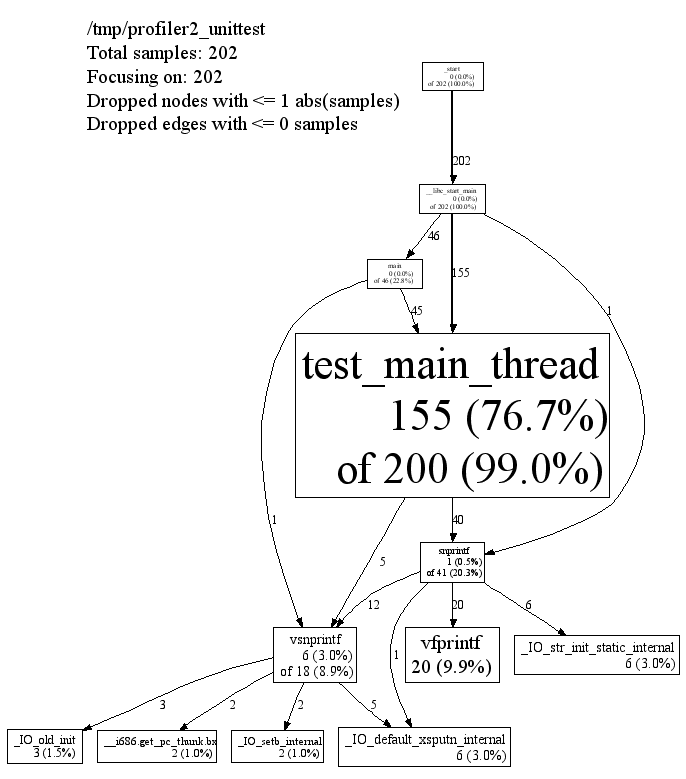

To install the CPU profiler into your executable, add -lprofiler to the link-time step for your executable. (It's also probably possible to add in the profiler at run-time using LD_PRELOAD, but this isn't necessarily recommended.)
This does not turn on CPU profiling; it just inserts the code. For that reason, it's practical to just always link -lprofiler into a binary while developing; that's what we do at Google. (However, since any user can turn on the profiler by setting an environment variable, it's not necessarily recommended to install profiler-linked binaries into a production, running system.)
There are two alternatives to actually turn on CPU profiling for a given run of an executable:
$ CPUPROFILE=/tmp/profile /usr/local/netscape # sh
% setenv CPUPROFILE /tmp/profile; /usr/local/netscape # csh
OR
In Linux 2.6 and above, profiling works correctly with threads, automatically profiling all threads. In Linux 2.4, profiling only profiles the main thread (due to a kernel bug involving itimers and threads). Profiling works correctly with sub-processes: each child process gets its own profile with its own name (generated by combining CPUPROFILE with the child's process id).
For security reasons, CPU profiling will not write to a file -- and is thus not usable -- for setuid programs.
In addition to the environment variable CPUPROFILE,
which determines where profiles are written, there are several
environment variables which control the performance of the CPU
profile.
PROFILEFREQUENCY=x |
How many interrupts/second the cpu-profiler samples. |
pprof is the script used to analyze a profile. It has many output modes, both textual and graphical. Some give just raw numbers, much like the -pg output of gcc, and others show the data in the form of a dependency graph.
pprof requires perl5 to be installed to run. It also requires dot to be installed for any of the graphical output routines, and gv to be installed for --gv mode (described below).
Here are some ways to call pprof. These are described in more detail below.
% pprof "program" "profile" Generates one line per procedure % pprof --gv "program" "profile" Generates annotated call-graph and displays via "gv" % pprof --gv --focus=Mutex "program" "profile" Restrict to code paths that involve an entry that matches "Mutex" % pprof --gv --focus=Mutex --ignore=string "program" "profile" Restrict to code paths that involve an entry that matches "Mutex" and does not match "string" % pprof --list=IBF_CheckDocid "program" "profile" Generates disassembly listing of all routines with at least one sample that match the --list=pattern. The listing is annotated with the flat and cumulative sample counts at each line. % pprof --disasm=IBF_CheckDocid "program" "profile" Generates disassembly listing of all routines with at least one sample that match the --disasm= pattern. The listing is annotated with the flat and cumulative sample counts at each PC value.
In the various graphical modes of pprof, the output is a call graph annotated with timing information, like so:
|  |
Each node represents a procedure. The directed edges indicate caller to callee relations. Each node is formatted as follows:
Class Name Method Name local (percentage) of cumulative (percentage)
The last one or two lines contains the timing information. (The profiling is done via a sampling method, where by default we take 100 samples a second. Therefor one unit of time in the output corresponds to about 10 milliseconds of execution time.) The "local" time is the time spent executing the instructions directly contained in the procedure (and in any other procedures that were inlined into the procedure). The "cumulative" time is the sum of the "local" time and the time spent in any callees. If the cumulative time is the same as the local time, it is not printed.
For instance, the timing information for test_main_thread() indicates that 155 units (about 1.55 seconds) were spent executing the code in test_main_thread() and 200 units were spent while executing test_main_thread() and its callees such as snprintf().
The size of the node is proportional to the local count. The percentage displayed in the node corresponds to the count divided by the total run time of the program (that is, the cumulative count for main()).
An edge from one node to another indicates a caller to callee relationship. Each edge is labelled with the time spent by the callee on behalf of the caller. E.g, the edge from test_main_thread() to snprintf() indicates that of the 200 samples in test_main_thread(), 37 are because of calls to snprintf().
Note that test_main_thread() has an edge to vsnprintf(), even though test_main_thread() doesn't call that function directly. This is because the code was compiled with -O2; the profile reflects the optimized control flow.
/tmp/profiler2_unittest
Total samples: 202
Focusing on: 202
Dropped nodes with <= 1 abs(samples)
Dropped edges with <= 0 samples
This section contains the name of the program, and the total samples
collected during the profiling run. If the --focus option is on (see
the Focus section below), the legend also
contains the number of samples being shown in the focused display.
Furthermore, some unimportant nodes and edges are dropped to reduce
clutter. The characteristics of the dropped nodes and edges are also
displayed in the legend.
You can ask pprof to generate a display focused on a particular piece of the program. You specify a regular expression. Any portion of the call-graph that is on a path which contains at least one node matching the regular expression is preserved. The rest of the call-graph is dropped on the floor. For example, you can focus on the vsnprintf() libc call in profiler2_unittest as follows:
% pprof --gv --focus=vsnprintf /tmp/profiler2_unittest test.prof
Similarly, you can supply the --ignore option to ignore samples that match a specified regular expression. E.g., if you are interested in everything except calls to snprintf(), you can say:
% pprof --gv --ignore=snprintf /tmp/profiler2_unittest test.prof
--text |
Produces a textual listing. This is currently the default since it does not need to access to an X display, or dot or gv. However if you have these programs installed, you will probably be happier with the --gv output. |
--gv |
Generates annotated call-graph, converts to postscript, and displays via gv. |
--dot |
Generates the annotated call-graph in dot format and emits to stdout. |
--ps |
Generates the annotated call-graph in Postscript format and emits to stdout. |
--gif |
Generates the annotated call-graph in GIF format and emits to stdout. |
--list=<regexp> |
Outputs source-code listing of routines whose name matches <regexp>. Each line in the listing is annotated with flat and cumulative sample counts. In the presence of inlined calls, the samples associated with inlined code tend to get assigned to a line that follows the location of the inlined call. A more precise accounting can be obtained by disassembling the routine using the --disasm flag. |
--disasm=<regexp> |
Generates disassembly of routines that match <regexp>, annotated with flat and cumulative sample counts and emits to stdout. |
By default, pprof produces one entry per procedure. However you can use one of the following options to change the granularity of the output. The --files option seems to be particularly useless, and may be removed eventually.
--addresses |
Produce one node per program address. |
--lines |
Produce one node per source line. |
--functions |
Produce one node per function (this is the default). |
--files |
Produce one node per source file. |
Some nodes and edges are dropped to reduce clutter in the output display. The following options control this effect:
--nodecount=<n> |
This option controls the number of displayed nodes. The nodes are first sorted by decreasing cumulative count, and then only the top N nodes are kept. The default value is 80. |
--nodefraction=<f> |
This option provides another mechanism for discarding nodes from the display. If the cumulative count for a node is less than this option's value multiplied by the total count for the profile, the node is dropped. The default value is 0.005; i.e. nodes that account for less than half a percent of the total time are dropped. A node is dropped if either this condition is satisfied, or the --nodecount condition is satisfied. |
--edgefraction=<f> |
This option controls the number of displayed edges. First of all, an edge is dropped if either its source or destination node is dropped. Otherwise, the edge is dropped if the sample count along the edge is less than this option's value multiplied by the total count for the profile. The default value is 0.001; i.e., edges that account for less than 0.1% of the total time are dropped. |
--focus=<re> |
This option controls what region of the graph is displayed based on the regular expression supplied with the option. For any path in the callgraph, we check all nodes in the path against the supplied regular expression. If none of the nodes match, the path is dropped from the output. |
--ignore=<re> |
This option controls what region of the graph is displayed based on the regular expression supplied with the option. For any path in the callgraph, we check all nodes in the path against the supplied regular expression. If any of the nodes match, the path is dropped from the output. |
The dropped edges and nodes account for some count mismatches in the display. For example, the cumulative count for snprintf() in the first diagram above was 41. However the local count (1) and the count along the outgoing edges (12+1+20+6) add up to only 40.
./ to your filename:
CPUPROFILE=./Ägypten.